入院原因：
张某，男性，62岁，因"双下肢疼痛3月，溃疡2月"拟双下肢动脉硬化闭塞症伴坏疽2025-05-27收入血管外科。
病例讨论
电风暴
重症医学科 · 2025年06月19日
Baseline
基础情况
1
2
既往史：
高血压20年，未口服药物控制，自诉平素血压控制在100/60mmHg左右；糖尿病20年，口服瑞格列奈，血糖控制可。慢性肾衰竭3年，左前臂人工动静脉瘘成形术，规律透析（一、三、五）。
3
入院检查：
2025-05-27心超：左室壁运动欠协调、心尖部搏幅稍减低。心电图：不定型室内阻滞伴ST-T改变，ST段：II、III、avF、V5、V6压低≥0.05mV。T波：II、III、avF、V7-V9平坦。BNP前体＞35000，TnI0.143。
Labs
完善入院相关检查
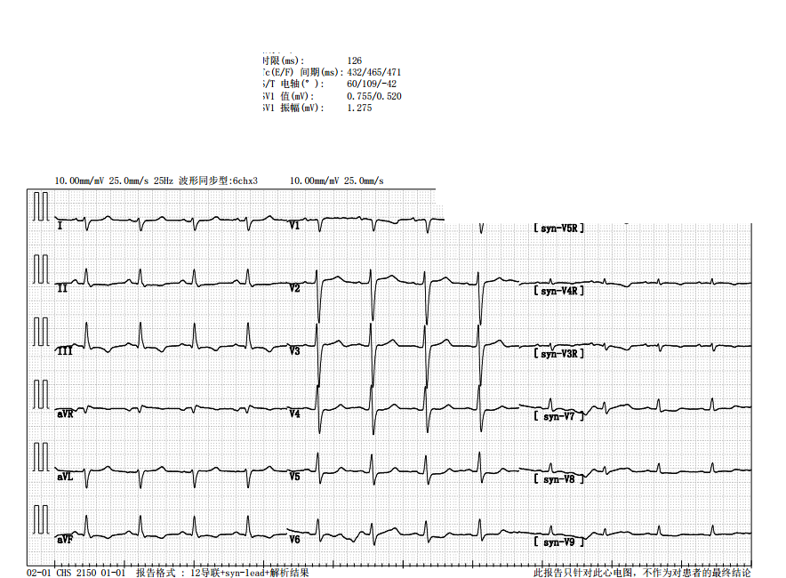
Cardiac
完善入院相关检查：心脏方面
心脏方面：2025-05-27心超：左室壁运动欠协调、心尖部搏幅稍减低。心电图：不定型室内阻滞伴ST-T改变，ST段：II、III、avF、V5、V6压低≥0.05mV。T波：II、III、avF、V7-V9平坦。
BNP前体＞35000，TnI0.143。
其他指标
血肌酐568 μmol/L
尿素氮18 mmol/L
谷氨酸脱氢酶＞300
ALT736 U/L
AST698 U/L
APTT47
D-D1.4
心血管二科会诊（2025-05-28）诊断：
慢性心力衰竭（射血分数保留型，EF51%）心功能II~III级，高血压性心脏病，高血压，可疑冠心病观察；余诊断同贵科。
处理：
· 低盐低脂低嘌呤糖尿病饮食
· 记出入量，控制每日总入量＜1500ml及输液速度，维持出入量平衡
· 维持电解质平衡
· 监测血压，目标血压＜130/80mmHg
· 控制血糖达标，尿酸＜360umol/l，减少动脉硬化风险
· 鉴于患者心血管易患因素多，已合并外周动脉闭塞，结合心电图提示"心肌缺血"及心彩超"左室壁运动欠协调、心尖部搏幅稍减低"改变，建议行冠脉造影术评估病情
· 完善HCY评估病情，指导诊治。我科随访。 谢谢！
CT
完善入院相关检查：头胸腹CT
头胸腹CT（2025-05-27）：
- 双侧基底节区、侧脑室旁散在腔隙性脑梗塞灶，请结合MRI扫描。
- 脑萎缩、脑白质脱髓鞘改变。
- 扫及鼻窦炎；双侧颈内动脉及椎动脉颅内段局部管壁钙化。
- 慢性支气管炎，肺气肿征象；双肺少许纤维灶及炎性灶。
- 双肺散在少许实性及磨玻璃样小结节、部分已钙化，提示中低危，请随访。
- 心脏增大，主动脉及冠状动脉多发钙化。
- 双侧胸膜增厚，双侧胸膜腔少量积液。
- 扫及双侧腋窝较多淋巴结显示，无明显增大。
- 肝内少许小钙化灶；左侧肾上腺增粗，双肾萎缩并多发囊肿，部分囊壁伴钙化可能。
- 胆囊壁稍厚。
- 结、直肠内容物密度升高。
Angio
治疗经过：下肢动脉造影 + 冠脉造影
2025-05-28 下肢动脉造影
· 腹主动脉下段通畅，管壁毛糙
· 双侧髂总动脉通畅
· 右侧髂外动脉可见多处短段中-重度狭窄，左侧髂外动脉通畅
· 右侧股总动脉通畅，股浅动脉起始部纤细，以下部分闭塞，股深动脉代偿、侧枝形成
· 腘动脉P1段部分经侧枝显影浅淡，以下部分闭塞
· 膝下胫前、胫后、腓动脉远端经侧枝显影浅淡，近端闭塞
· 左侧股浅动脉上段纤细，以下部分闭塞，股深动脉代偿、侧枝形成
· 腘动脉P3段经侧枝显影浅淡，其余部分闭塞
· 胫前动脉通畅，胫后、腓动脉闭塞
2025-05-30 09:50 冠脉造影
冠脉供血呈右冠优势型。左、右冠脉开口正常。沿右冠脉走形可见钙化影。
- 左冠状动脉：左主干未见明显异常，前降支近段至中段可见最重约60%弥漫性偏心性狭窄，回旋支中段可见最重约60%弥漫性偏心性狭窄，余未见明显异常。
- 右冠状动脉：近段至中段可见最重约75%弥漫性偏心性狭窄，中远段可见最重约99%次全闭塞，远端血流速度TIMI1级，余未见明显异常。
考虑有冠脉手术指征。
PCI
治疗经过：转入ICU + PCI
05-30 14:36 转入我科监护治疗。
05-30 16:00 外出行经皮冠状动脉旋磨术、2.经皮冠状动脉腔内血管成形术[PTCA]。术后转入我科行CRRT及监护治疗。
入我科后完善相关检查
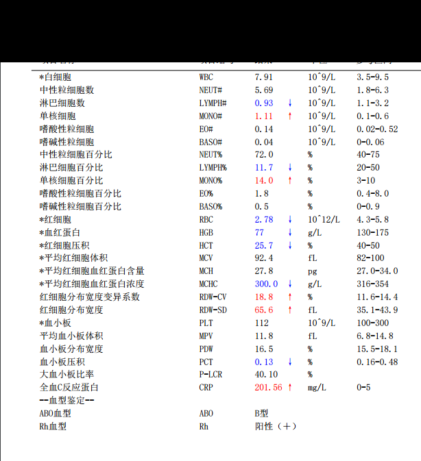

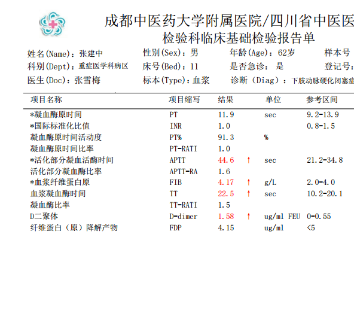
Labs
入科后相关检验检查
治疗方案
治疗上，予头孢呋辛抗感染，法莫替丁抑酸护胃，多烯磷脂酰胆碱护肝，床旁CRRT降肌酐，术后予吲哚布芬、氯吡格雷抗板，普伐他汀降脂稳斑，地佐辛镇痛，盐酸右美托咪定注射液、氟哌啶醇浅镇静，沙库巴曲缬沙坦钠片降压，注射用人促红素改善肾性贫血等对症支持治疗。
后患者不配合，强行要求转科，于05-31 17:30转出。
入我科后检验
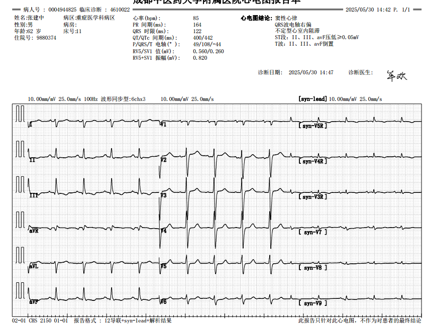
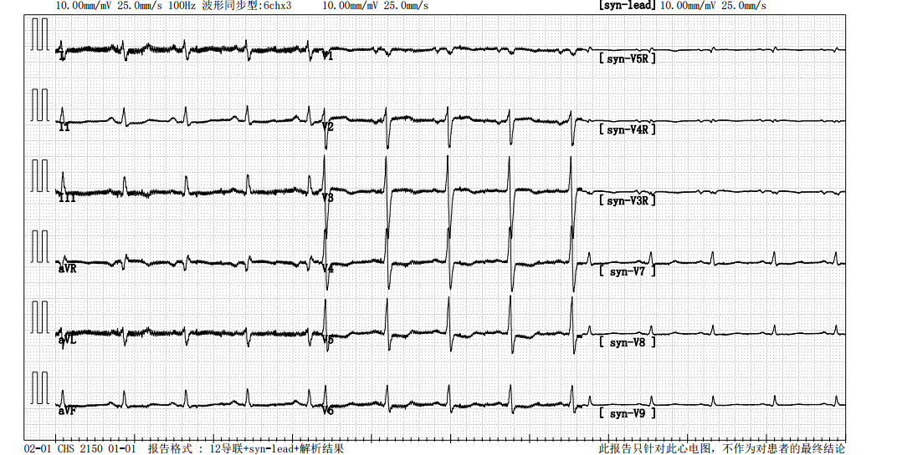
Event
治疗经过：意识障碍发作
06-02 早上 查房：患者神志嗜睡，精神差，未诉特殊不适主诉，生命体征平稳。
神内急会诊（08:52）：上午床旁查看病人，嗜睡，可配合完成抬手、伸舌等指令，双眼光反应迟钝（家属诉左眼因糖尿病病变视力明显下降），鼻唇沟对称，伸舌居中，双上肢肌力3-4级对称，双下肢因疼痛配合欠佳，病理征未引出。皮肤黏膜未见出血点。急诊完善头颅CT未见出血、可见腔隙性脑梗。
目前诊断：代谢性脑病？建议：1.维持内环境稳定，会诊时患者咳嗽，注意感染情况。2.密切观察患者皮肤黏膜及大便情况。必要时复查头颅CT或MRI MRA。 谢邀。
06-02 13:00 患者透析前突发意识丧失，透析室医师告知患者透析前突发呼之不应，查看患者右侧瞳孔变大直径约5mm、左侧瞳孔直径约3mm，双侧光反应均迟钝，约2分钟后患者呼之可应，未发现四肢抽搐、凝视等。
Discussion
讨论1
Q1
讨论1：患者出现意识障碍，应当做如何诊断？
Diagnosis
治疗经过：会诊与入科诊断
神内会诊：
· 目前诊断：意识丧失待查：癫痫？
· 建议：1.复查头颅CT，排除出血等新发情况
· 2.排除心脏新发病变
· 3.ICU会诊，维持生命体征平稳
我科会诊：
· 患者嗜睡，呼之可应，言语不清，瞳孔等大，直径约2mm，对光反射迟钝
· 心电监护示：P 88次/分，SPO2 99%（面罩吸氧10L/min），BP 90/50mmHg
· 结合病史及辅助检查，考虑诊断：意识障碍原因待查。遂转入我科监护治疗
入科诊断：
- 意识障碍原因待查
- 双下肢动脉硬化闭塞症伴坏疽
- 冠状动脉粥样硬化性心脏病 三支病变（累及前降支、回旋支、右冠脉）
- 慢性肾衰竭 肾性贫血
- 血液透析状态
- 高血压 高血压性心脏病
- 2型糖尿病
- 2型糖尿病伴有多个并发症
- 2型糖尿病足病
- 肝功能不全
- 肝钙化灶
- 慢性心力衰竭（射血分数保留型，EF51%）心功能Ⅱ--Ⅲ级（NYHA分级）
- 双侧基底节区、侧脑室旁散在腔隙性脑梗塞灶
- 脑萎缩
- 双侧颈内动脉钙化
- 双侧椎动脉钙化
- 慢性支气管炎伴肺气肿
- 双肺少许纤维灶及炎性灶
- 双肺散在少许实性、磨玻璃样小结节（中低危）
- 双侧胸膜腔少量积液
Labs
入科完善相关检验检查
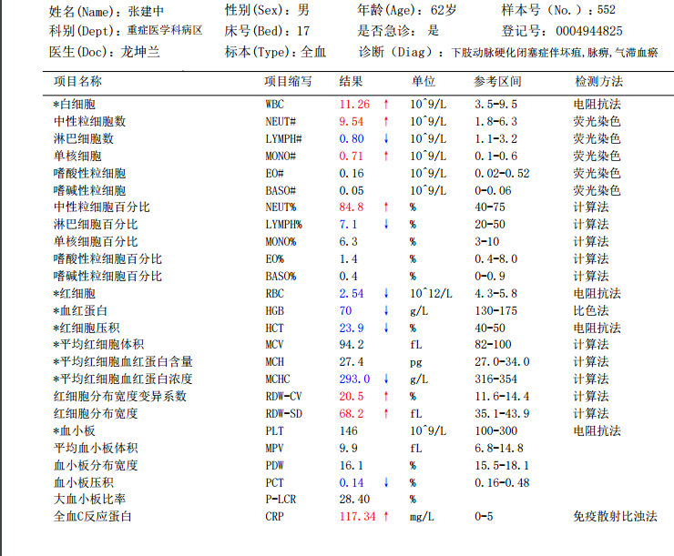
①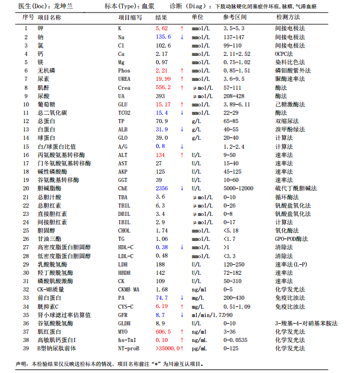
②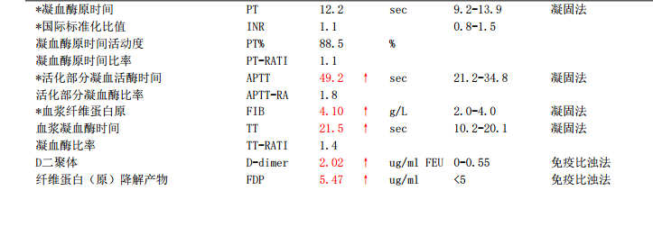
③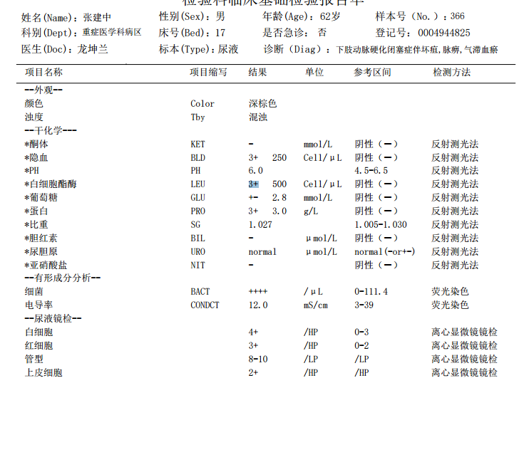
④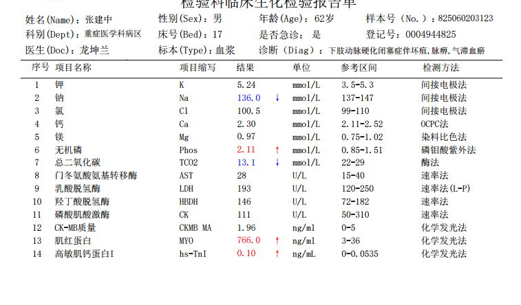
⑤VF Storm
治疗经过：电风暴发作（室颤）
06-02 15:14 患者突发呼之不应，面色苍白，四肢厥冷，血压及氧饱和度测不出，HR 250次/分，ECG示：室颤。立即胸外心脏按压，静推肾上腺素1mg，床旁双向同步电极除颤200J。
恢复窦性心律后，多次发生室颤 15:23 15:30 15:36 15:50 15:53 16:00，期间反复予心肺复术、电除颤、肾上腺素、利多卡因、胺碘酮、硫酸镁、极化液等抢救治疗，后予气管插管术有创呼吸机辅助通气。生命体征平稳后行床旁CRRT治疗 18:02。
余治疗：吲哚布芬、氯吡格雷抗板，瑞芬太尼、丙泊酚镇痛镇静。哌拉西林钠他唑巴坦钠抗感染，法莫替丁抑酸护胃，多烯磷脂酰胆碱护肝，达格列净、螺内酯抗心衰。
夜间 18:50 21:04 再次发生室颤，予心肺复苏术及电除颤后室颤消失。
Labs
抢救期间相关检验检查
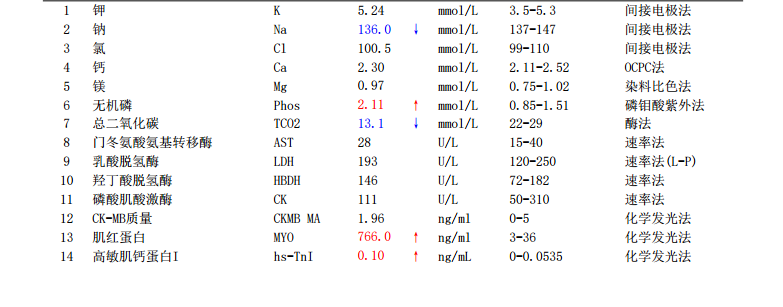
Holter
24小时动态心电图
24小时动态心电图示：窦性心律、异位心律，记录总时间23小时54分钟，记录总心室搏数103456次，最高心室率249次/分，为短阵室速，发生于06-02 18:42:23，最低心律为窦性心动过缓、交界性逸搏心律，发生于06.02 15:50:31，平均心室率为73次/分；最长RR间期1.724秒，为短阵室速后代偿间歇。
房性早搏
165
占总心搏数 0.16% · 119单发 · 23对成对 · 三联律2阵
室性早搏
4566
占总心搏数 4.41% · 556单发 · 526对成对 · 二联律12阵 · 三联律19阵
室速
172阵
最快 247 次/分 · 最长室性心搏数 632
交界性逸搏
6
交界性逸搏心律 1 珍
T波：II、III、aVF、V3-6低平或切迹；部分时间U波增高，T-U融合波，请结合临床，心率变异性降低。
心内科会诊意见：补充诊断：1.频发室性期前收缩；2.余同贵科。
建议：1.继续予艾司洛尔、胺碘酮泵入预防电风暴；2.积极纠正电解质紊乱，可给予钾镁液，将血钾维持在4.5-5.0mmol/L之间；3.待病情稳定后，择期行冠脉内支架植入术；4.择期行ICD植入；5.我科随诊。 谢邀！
Recovery
治疗经过：后续进程
- 2025-06-03 白天上午未见室早，中午停用利多卡因，下午见频发室早二联律，加用利多卡因后室早消失。
- 2025-06-04 上午 停用利多卡因，未见室性心律失常。
- 2025-06-04 16:50 心电图提示QT间期延长，停用胺碘酮。
- 06-05 09:24 予富马酸比索洛尔片2.5mg控制心室率，预防心电风暴。
- 06-05 14:30 气管插管拔除。
- 06-08 转入普通病房（血管外科）。
- 06-12 出院。
Definition
电风暴·定义
电风暴（Electrical Storm, ES）是一种危及生命的心脏电不稳定状态，其特征为短时间内反复发作的持续性室性心律失常（Ventricular Arrhythmias, VA）。这些室性心律失常多为单形性室性心动过速（Monomorphic VT, MMVT），但也可能包括多形性室性心动过速（Polymorphic VT, PMVT）和心室颤动（Ventricular Fibrillation, VF）。
尽管部分室性心律失常可自行终止，但若患者未植入功能性植入式心律转复除颤器（ICD），通常需药物干预或体外除颤治疗。
ES的临床标准定义：24小时内出现3次或以上持续性室性心律失常发作（包括ICD恰当放电），且每次发作间隔至少5分钟。
Jentzer JC, et al. Multidisciplinary Critical Care Management of Electrical Storm: JACC State-of-the-Art Review. J Am Coll Cardiol. 2023;81(22):2189-2206.
Risk Factors
危险因素
电风暴（ES）患者中，77%-94%存在基础结构性心脏病，其中多数为晚期心肌病（缺血性或非缺血性）。少数ES患者心脏宏观结构正常但存在分子水平异常（如离子通道病）。由于心肌病本身即是植入式心律转复除颤器（ICD）的适应证，且ICD能在ES发作时终止心源性猝死（SCD），因此多数ES患者在发病前已植入ICD，这使得患者能够存活至入院。
已报道的ES危险因素包括：
- 左心室射血分数（LVEF）降低
- 高龄
- QRS波时限延长
- 未接受规范的指南导向药物治疗（GDMT）
- 慢性肾脏病
- 既往室性心律失常发作史（尤其以单形性室速作为首发心律者）
Jentzer JC, et al. Multidisciplinary Critical Care Management of Electrical Storm: JACC State-of-the-Art Review. J Am Coll Cardiol. 2023;81(22):2189-2206.
Pathophysiology
病理生理学
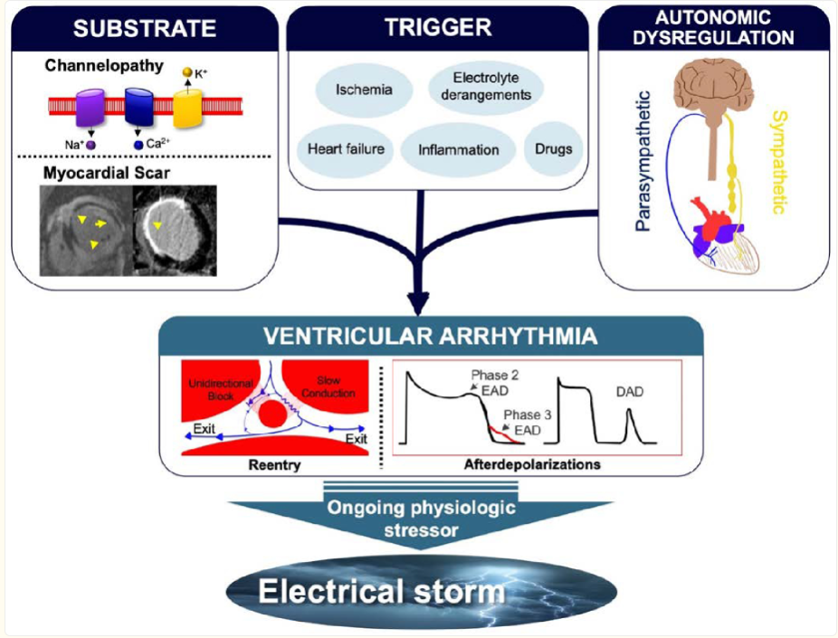
电风暴（ES）致心律失常机制解析：
在存在解剖或电学异常基质（如心肌瘢痕）的个体中，触发因素（心肌缺血、炎症、血流动力学失代偿、药物及电解质紊乱）常伴随自主神经失衡，通过以下途径导致持续性室性心律失常（VA）：
- 折返机制（reentry）
- 后除极触发活动（after depolarizations）
- 持续化机制：初始触发因素与继发的交感神经过度激活形成恶性循环，促使VA反复发作，最终演变为电风暴。
Jentzer JC, et al. Multidisciplinary Critical Care Management of Electrical Storm: JACC State-of-the-Art Review. J Am Coll Cardiol. 2023;81(22):2189-2206.
Diagnosis
诊断性评估和风险分层
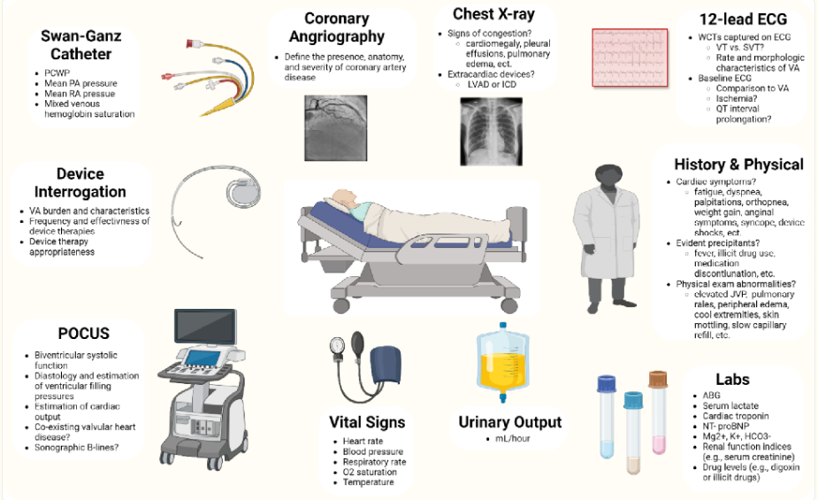
ES患者的初始诊断评估侧重于评估心律失常、识别触发因素、了解心脏基质、评估血流动力学状态和进行风险分层。应从ICD询问和心脏遥测（如果有）中寻找有关VA发作频率和持续时间的信息，并且开始连续（最好是12导联）心电图监测非常有价值。
可能证明更积极初始策略的高风险VA特征：VF/PMVT、更快的心室率、更频繁或持续的VA发作、退化为VF的倾向、ICD治疗失败以及由短偶联PVC触发的VA。
患者的VA病史和既往治疗（包括AAD或导管消融术）将有助于预测治疗成功的可能性。
Jentzer JC, et al. Multidisciplinary Critical Care Management of Electrical Storm: JACC State-of-the-Art Review. J Am Coll Cardiol. 2023;81(22):2189-2206.
Triggers
识别触发因素
触发因素
· 心肌缺血、心力衰竭恶化或容量负荷过重
· 急性感染伴发热
· 药物毒性（致QT间期延长）
· 电解质紊乱（低钾/高钾/低镁）
· 交感神经亢进
· 非心脏器官衰竭、甲状腺毒症
识别与检查
· 识别并停用致心律失常药物
· 实验室检查：电解质、乳酸、肾/肝/甲状腺功能、心脏标志物
· 12导联心电图（自身心律+VT期间）
影像学评估
· 对于已确诊冠状动脉疾病（CAD）或缺血性心肌病（ICM）的患者，必须排除心肌缺血，同时要认识到非缺血性过程也可能使血清心肌肌钙蛋白水平升高
· 冠状动脉造影常用于识别可能引发心肌缺血的阻塞性冠状动脉疾病，即使患者没有急性心肌梗死的明确证据
· 对于临床怀疑程度较低的特定稳定患者，可考虑进行计算机断层扫描冠状动脉造影
Jentzer JC, et al. Multidisciplinary Critical Care Management of Electrical Storm: JACC State-of-the-Art Review. J Am Coll Cardiol. 2023;81(22):2189-2206.
Management
管理

Jentzer JC, et al. Multidisciplinary Critical Care Management of Electrical Storm: JACC State-of-the-Art Review. J Am Coll Cardiol. 2023;81(22):2189-2206.
点击图片可放大